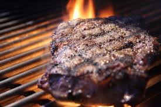

마이야르 반응이란 환원당과 아미노기를 가지는 화합물을 섭씨 120도 이상으로 가열할 때 일어나는 반응이다. 식품의 가열, 조리 또는 저장 중 일어나는 갈변이나 향기의 생성에 관여한다.

고기를 구울 때 생기는 갈색 크러스트나 식빵의 갈색 껍질이 마이야르 반응의 결과물이다.
다른 말로는 아미노 카보닐 반응이라고도 하며 아미노기와 카보닐기가 합쳐져 특유의 색과 향을 생성하는 반응이다.